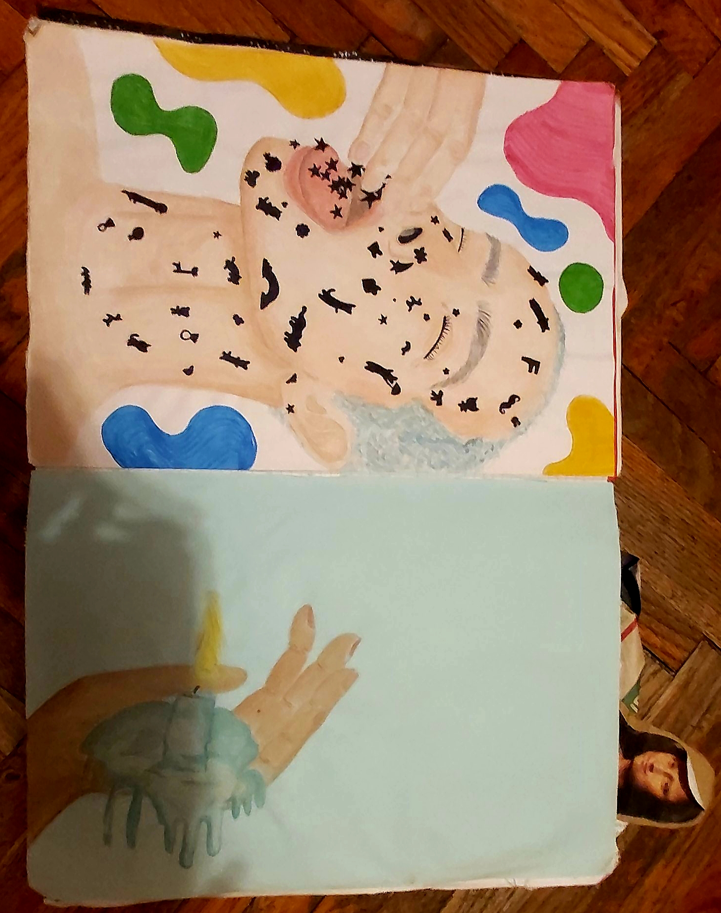
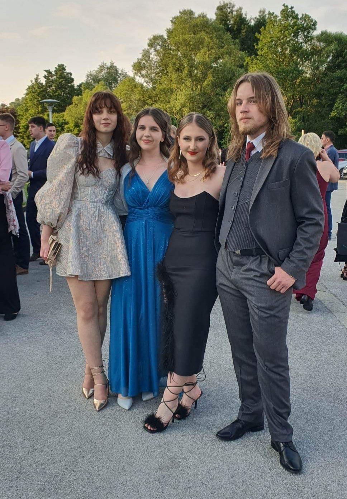

Zovem se Laura Knechtl. Imam 19 godina. Studentica sam prve godine preddiplomskog studija Grafički dizajn na Grafičkom fakultetu Sveučilišta
u Zagrebu. Dolazim iz malog sela iz Međimurja. Živim u kući sa svojom starijom sestrom, roditeljima i bakom. Za vrijeme studiranja u Zagrebu boravim
u Studentskom domu Stjepana Radića.
U slobodno vrijeme volim pogledati dobar film na Netflixu, crtati, slušati glazbu, a od početka drugog semestra redovito hodam u teretanu. Također, volim izlaziti
van sa svojim prijateljima.
U nastavku nalaze se fotografije nekih mojih radova iz srednje škole te fotografije ljudi s kojima provodim više od 90% svog vremena.
Sika 1, Masterpiece
Ova prva fotografija prikazuje bilježnicu koju sam nazvala Masterpiece. U njoj nalaze se crteži iz razdoblja 2. do 4. razreda srednje škole. Bilježnicu sam napravila krajem 2. srednje za vrijeme karantene. Inspirirala me njemačka serija Druck. U seriji jedan od glavnih likova 3. sezone studira na Likovnoj akademiji te svoje radove stavlja u posebnu bilježnicu.
Slika 2, Čovijek koji guta naljepnice (lijevo), Ruka sa svijećom (desno)
S lijeve strane nalazi se jedan od mojih najdražih radova u cijeloj bilježnici. Ovaj rad napravila sam krajem 8. mjeseca 2021. godine. Slika prikazuje čovjeka koji guta naljepnice.
Čovjeka sam naslikala s akvarel bojama, a za pozadinu i naljepnice koristila sam flomastere.
S desne strane nalazi se ruka sa svijećom. Rad je također napravljem upotrebom akvarela.
Slika 3, Stariji gospodin sa šeširom
Treća fotografija prikazuje starijeg muškarca. Ovaj rad napravila sam 2023. godine koristeći uljne pastele.
Slika 4, Ljudi s faksa
Prva fotografija prikazuje ljude s kojima preživljavam dane na faksu, ali i studentske srijede. Fotka je nastala sredinom 10. mjeseca kada ni sama nisam bila svjesna što ću sve proživjeti s tim ljudima u ovom kratkom periodu.
Slika 4, The gang
Druga fotografija prikazuje ljude s kojima sam preživjela gimnazijske, a s nekima čak i osnovnoškolske dane. Leonora (djevojka u crnoj haljini) moja je glavna motivacija za gym. Žena je visoka 155cm, a njezin dead lift iznosi 130kg.
Kako sam na samom početku spomenula, volim gledati filmove. Ovdje se nalazi lista mojih omiljenih filmova.
Za kraj, uživajte u traileru filma kojeg ću uskoro pogledati.